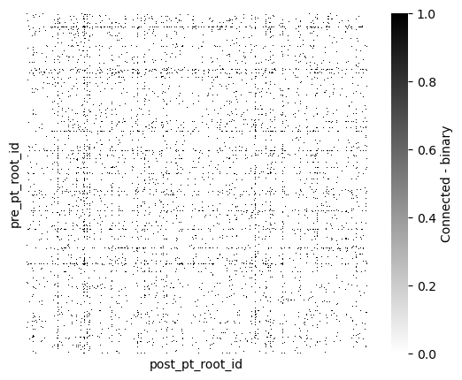

from caveclient import CAVEclient
import pandas as pd
import numpy as np
from matplotlib import pyplot as plt
import seaborn as snsCAVE Query: Synaptic Connectivity
The Connectome Annotation Versioning Engine (CAVE) is a suite of tools developed at the Allen Institute and Seung Lab to manage large connectomics data.
Initial Setup
Before using any programmatic access to the data, you first need to set up your CAVEclient token.
The connectome data (synapses, cell types, etc.) can be accessed from the cloud via CAVE. However, because of the size of the connectivity tables, it is often preferable to download and compile the features of interest (in this case synapses) to work with offline. This notebook steps through downloading the synapses of the proofread neurons, as of materialization version 1181.
Quickstart
It is recommended you have worked through the CAVE Quickstart notebook, as this tutorial builds on knowledge in the previous notebook.
Initialize CAVEclient with a datastack
Datasets in CAVE are organized as datastacks. These are a combination of an EM dataset, a segmentation and a set of annotations. The datastack for MICrONS public release is minnie65_public. When you instantiate your client with this datastack, it loads all relevant information to access it.
client = CAVEclient("minnie65_public")Materialization versions
Data in CAVE is timestamped and periodically versioned - each (materialization) version corresponds to a specific timestamp. Individual versions are made publicly available. The materialization service provides annotation queries to the dataset. It is available under client.materialize.
Currently the following versions are publicly available (in this tutorial we will be using 1181):
client.materialize.get_versions()[1078, 117, 661, 343, 1181, 795, 943]And these are their associated timestamps (all timestamps are in UTC):
for version in client.materialize.get_versions():
print(f"Version {version}: {client.materialize.get_timestamp(version)}")Version 1078: 2024-06-05 10:10:01.203215+00:00
Version 117: 2021-06-11 08:10:00.215114+00:00
Version 661: 2023-04-06 20:17:09.199182+00:00
Version 343: 2022-02-24 08:10:00.184668+00:00
Version 1181: 2024-09-16 10:10:01.121167+00:00
Version 795: 2023-08-23 08:10:01.404268+00:00
Version 943: 2024-01-22 08:10:01.497934+00:00The client will automatically query the latest materialization version. You can specify a materialization_version for every query if you want to access a specific version.
For instance, this example uses version 1181, and not default latest
client.version=1181Querying Synapses
While synapses are stored as any other table in the database, in this case synapses_pni_2, this table is much larger than any other table at more than 337 million rows, and it works best when queried in a different way.
The synapse_query function allows you to query the synapse table in a more convenient way than most other tables. In particular, the pre_ids and post_ids let you specify which root id (or collection of root ids) you want to query, with pre_ids indicating the collection of presynaptic neurons and post_ids the collection of postsynaptic neurons.
Using both pre_ids and post_ids in one call is effectively a logical AND, returning only those synapses from neurons in the list of pre_ids that target neurons in the list of post_ids.
Let’s look at one particular example.
my_root_id = 864691135808473885
syn_df = client.materialize.synapse_query(pre_ids=my_root_id)
print(f"Total number of output synapses for {my_root_id}: {len(syn_df)}")
syn_df.head()Total number of output synapses for 864691135808473885: 1498| id | created | superceded_id | valid | size | pre_pt_supervoxel_id | pre_pt_root_id | post_pt_supervoxel_id | post_pt_root_id | pre_pt_position | post_pt_position | ctr_pt_position | |
|---|---|---|---|---|---|---|---|---|---|---|---|---|
| 0 | 158405512 | 2020-11-04 06:48:59.403833+00:00 | NaN | t | 420 | 89385416926790697 | 864691135808473885 | 89385416926797494 | 864691135546540484 | [179076, 188248, 20233] | [179156, 188220, 20239] | [179140, 188230, 20239] |
| 1 | 185549462 | 2020-11-04 06:49:10.903020+00:00 | NaN | t | 4832 | 91356016507479890 | 864691135808473885 | 91356016507470163 | 864691135884799088 | [193168, 190452, 19262] | [193142, 190404, 19257] | [193180, 190432, 19254] |
| 2 | 138110803 | 2020-11-04 06:49:46.758528+00:00 | NaN | t | 3176 | 87263084540201919 | 864691135808473885 | 87263084540199587 | 864691135759983182 | [163440, 104292, 19808] | [163498, 104348, 19806] | [163460, 104356, 19804] |
| 3 | 157378264 | 2020-11-04 07:38:27.332669+00:00 | NaN | t | 412 | 89374490395905686 | 864691135808473885 | 89374490395921430 | 864691135446953106 | [179218, 107132, 19372] | [179204, 107010, 19383] | [179196, 107072, 19380] |
| 4 | 174798776 | 2020-11-04 10:10:59.416878+00:00 | NaN | t | 1796 | 90089104301487245 | 864691135808473885 | 90089104301487089 | 864691135572292333 | [184038, 188292, 19753] | [183920, 188202, 19754] | [183998, 188216, 19755] |
Note that synapse queries always return the list of every synapse between the neurons in the query, even if there are multiple synapses between the same pair of neurons.
A common pattern to generate a list of connections between unique pairs of neurons is to group by the root ids of the presynaptic and postsynaptic neurons and then count the number of synapses between them. For example, to get the number of synapses from this neuron onto every other neuron, ordered
syn_df.groupby(
['pre_pt_root_id', 'post_pt_root_id']
).count()[['id']].rename(
columns={'id': 'syn_count'}
).sort_values(
by='syn_count',
ascending=False,
)
# Note that the 'id' part here is just a way to quickly extract one column.
# This could be any of the remaining column names, but `id` is often convenient
# because it is common to all tables.| syn_count | ||
|---|---|---|
| pre_pt_root_id | post_pt_root_id | |
| 864691135808473885 | 864691135865557118 | 20 |
| 864691135214122296 | 16 | |
| 864691136578647572 | 15 | |
| 864691136066504856 | 13 | |
| 864691135841325283 | 11 | |
| ... | ... | |
| 864691136926552138 | 1 | |
| 864691136952088543 | 1 | |
| 864691135241125665 | 1 | |
| 864691136952690399 | 1 | |
| 864691136974682652 | 1 |
1035 rows × 1 columns
We can query the synapse table directly. However, it is too large to query all at once. CAVE limits to queries to 500,000 rows at once and will display a warning when that happens. Here, we demonstrate this with the limit set to 10:
synapse_table_name = client.info.get_datastack_info()["synapse_table"]
syn_df = client.materialize.query_table(synapse_table_name, limit=10, desired_resolution=[1, 1, 1], split_positions=True)
syn_df| id | created | superceded_id | valid | pre_pt_position_x | pre_pt_position_y | pre_pt_position_z | post_pt_position_x | post_pt_position_y | post_pt_position_z | ctr_pt_position_x | ctr_pt_position_y | ctr_pt_position_z | size | pre_pt_supervoxel_id | pre_pt_root_id | post_pt_supervoxel_id | post_pt_root_id | |
|---|---|---|---|---|---|---|---|---|---|---|---|---|---|---|---|---|---|---|
| 0 | 4456 | 2020-11-04 13:02:08.388988+00:00 | NaN | t | 211448.0 | 409744.0 | 801440.0 | 211448.0 | 409744.0 | 801440.0 | 211612.0 | 410172.0 | 801400.0 | 2956 | 72063160986635724 | 864691135533713769 | 72063160986635724 | 864691135533713769 |
| 1 | 4503 | 2020-11-04 12:09:33.286834+00:00 | NaN | t | 212456.0 | 408032.0 | 800360.0 | 212456.0 | 408032.0 | 800360.0 | 212168.0 | 408088.0 | 800400.0 | 344 | 72063092267156962 | 864691135087527094 | 72063092267156962 | 864691135087527094 |
| 2 | 4508 | 2020-11-04 13:02:13.024144+00:00 | NaN | t | 212448.0 | 411696.0 | 801440.0 | 212448.0 | 411696.0 | 801440.0 | 212224.0 | 411800.0 | 801560.0 | 344 | 72063229706111827 | 864691135533713769 | 72063229706111827 | 864691135533713769 |
| 3 | 4568 | 2020-11-04 13:44:08.085705+00:00 | NaN | t | 213392.0 | 415448.0 | 802920.0 | 213392.0 | 415448.0 | 802920.0 | 213096.0 | 415176.0 | 802880.0 | 13816 | 72133735889250131 | 864691134530418554 | 72133735889250131 | 864691134530418554 |
| 4 | 4581 | 2020-11-04 07:29:12.917622+00:00 | NaN | t | 213552.0 | 417184.0 | 800800.0 | 213552.0 | 417184.0 | 800800.0 | 213240.0 | 417080.0 | 801080.0 | 10436 | 72133804608718799 | 864691134745062676 | 72133804608718799 | 864691134745062676 |
| 5 | 4582 | 2020-11-04 13:02:17.694701+00:00 | NaN | t | 212880.0 | 409120.0 | 801440.0 | 212880.0 | 409120.0 | 801440.0 | 213016.0 | 408832.0 | 801520.0 | 1344 | 72063160986636743 | 864691135533713769 | 72063160986636743 | 864691135533713769 |
| 6 | 4588 | 2020-11-04 12:20:12.290593+00:00 | NaN | t | 213200.0 | 421120.0 | 805520.0 | 213200.0 | 421120.0 | 805520.0 | 213064.0 | 421000.0 | 805600.0 | 7128 | 72133942047682150 | 864691134609767690 | 72133942047682150 | 864691134609767690 |
| 7 | 4590 | 2020-11-04 13:20:01.875310+00:00 | NaN | t | 213504.0 | 406440.0 | 805160.0 | 213504.0 | 406440.0 | 805160.0 | 213336.0 | 406596.0 | 805200.0 | 6572 | 72133461011344162 | 864691135091400630 | 72133461011344162 | 864691135091400630 |
| 8 | 4606 | 2020-11-04 07:24:39.038223+00:00 | NaN | t | 213384.0 | 413792.0 | 800800.0 | 213384.0 | 413792.0 | 800800.0 | 213256.0 | 413976.0 | 801040.0 | 2100 | 72133667169766499 | 864691134609872906 | 72133667169766499 | 864691134609872906 |
| 9 | 4611 | 2020-11-04 07:24:37.800341+00:00 | NaN | t | 213336.0 | 415304.0 | 800960.0 | 213336.0 | 415304.0 | 800960.0 | 213192.0 | 415604.0 | 800960.0 | 492 | 72133735889243887 | 864691134609872906 | 72133735889243887 | 864691134609872906 |
Instead we need to limit our query to a few neurons. The next section will load the proofread cells, and merge their cell type information for some connectivity mapping
Query proofread cells and connectivity
Proofread neurons
The table proofreading_status_and_strategy contains proofreading information about ~1,300 neurons. This manifest on microns-explorer.org provides the most detailed overview. In brief, axons annotated with any strategy_axon were cleaned of false mergers but not all were fully extended. The most important distinction is axons annotated with axon_column_truncated were only proofread within a certain volume wheras others were proofread without such bias.
proof_df = client.materialize.tables.proofreading_status_and_strategy(status_axon='t').query(desired_resolution=[1, 1, 1], split_positions=True)
proof_df["strategy_axon"].value_counts()strategy_axon
axon_partially_extended 979
axon_column_truncated 233
axon_interareal 144
axon_fully_extended 80
Name: count, dtype: int64Query synapses between proofread neurons
We can query the graph spanned by the neurons with proofread axons using the filter_in_dict parameter (takes ~3 mins):
%%time
# This takes 3-5 minutes to complete
synapse_table_name = client.info.get_datastack_info()["synapse_table"]
syn_proof_only_df = client.materialize.query_table(synapse_table_name, desired_resolution=[1, 1, 1], split_positions=True,
filter_in_dict={"pre_pt_root_id": proof_df["pt_root_id"],
"post_pt_root_id": proof_df["pt_root_id"]})
# remove autapses
syn_proof_only_df = syn_proof_only_df[syn_proof_only_df["pre_pt_root_id"] != syn_proof_only_df["post_pt_root_id"]]
print(len(syn_proof_only_df))132438
CPU times: total: 297 ms
Wall time: 2min 23sPlot connectivity as binarized heatmap
Now lets plot the connectivity between every proofread cell and every other cell
syn_mat = syn_proof_only_df.pivot_table(index="pre_pt_root_id", columns="post_pt_root_id",
values="size", aggfunc=lambda x: float(np.sum(x) > 0)).fillna(0)
syn_mat = syn_mat.reindex(columns=np.array(syn_mat.index))fig, ax = plt.subplots(figsize=(7, 5))
sns.heatmap(syn_mat, cmap="gray_r", xticklabels=[], yticklabels=[],
ax=ax, square=True,
cbar_kws={"label": "Connected - binary"})
There is some structure of highly interconnected cells. By adding information about the type of cells, we might infer more about the connectivity patterns
Add cell type information to connectivity
Querying cell type information
There are two distinct ways cell types were classified in the MICrONS dataset: manual and automated. Manual annotations are available for ~1,000 neurons (allen_v1_column_types_slanted_ref), automated classifications are available for all cell bodies based on these manual annotations (aibs_metamodel_celltypes_v661). Because they are annotating an existing annotations, these annotations are introduced as a “reference” table:
Annotation tables
For more on cell types and their tables, see the Annotation Tables page.
ct_manual_df = client.materialize.query_table("allen_v1_column_types_slanted_ref", desired_resolution=[1, 1, 1], split_positions=True)
# rename the reference column for clarity
ct_manual_df.rename(columns={'target_id': 'nucleus_id'}, inplace=True)
# remove segments with multiple cell bodies
ct_manual_df.drop_duplicates("pt_root_id", keep=False, inplace=True)
ct_manual_df.head(5)| id | created | valid | nucleus_id | classification_system | cell_type | id_ref | created_ref | valid_ref | volume | ... | pt_position_y | pt_position_z | bb_start_position_x | bb_start_position_y | bb_start_position_z | bb_end_position_x | bb_end_position_y | bb_end_position_z | pt_supervoxel_id | pt_root_id | |
|---|---|---|---|---|---|---|---|---|---|---|---|---|---|---|---|---|---|---|---|---|---|
| 0 | 50 | 2023-03-18 14:13:21.613360+00:00 | t | 258319 | aibs_coarse_excitatory | 23P | 258319 | 2020-09-28 22:40:42.476911+00:00 | t | 261.806162 | ... | 572992.0 | 849520.0 | NaN | NaN | NaN | NaN | NaN | NaN | 89309001002848425 | 864691135927260174 |
| 1 | 1119 | 2023-03-18 14:13:22.506660+00:00 | t | 276438 | aibs_coarse_excitatory | 6P-CT | 276438 | 2020-09-28 22:40:42.700226+00:00 | t | 277.317714 | ... | 1035072.0 | 943880.0 | NaN | NaN | NaN | NaN | NaN | NaN | 89465269428261699 | 864691136487559186 |
| 2 | 35 | 2023-03-18 14:13:21.602813+00:00 | t | 260552 | aibs_coarse_excitatory | 23P | 260552 | 2020-09-28 22:40:42.745779+00:00 | t | 230.111805 | ... | 631872.0 | 840080.0 | NaN | NaN | NaN | NaN | NaN | NaN | 89170256379033022 | 864691135510274057 |
| 3 | 95 | 2023-03-18 14:13:21.644304+00:00 | t | 260263 | aibs_coarse_excitatory | 23P | 260263 | 2020-09-28 22:40:42.746658+00:00 | t | 274.324193 | ... | 632512.0 | 810640.0 | NaN | NaN | NaN | NaN | NaN | NaN | 88044356338331571 | 864691135694415551 |
| 4 | 81 | 2023-03-18 14:13:21.634505+00:00 | t | 262898 | aibs_coarse_inhibitory | BPC | 262898 | 2020-09-28 22:40:42.749245+00:00 | t | 230.092308 | ... | 701120.0 | 878560.0 | NaN | NaN | NaN | NaN | NaN | NaN | 88468836747612860 | 864691135759892302 |
5 rows × 21 columns
The reference table added two additional data columns: classification_system and cell_type. The classification_system divides the cells into excitatitory and inhibitory neurons as well as non-neuronal cells. cell_type provides lower level cell annotations.
Next, we query the automatically classified cell type information. The query works the same way:
ct_auto_df = client.materialize.query_table("aibs_metamodel_celltypes_v661", desired_resolution=[1, 1, 1], split_positions=True)
# rename the reference column for clarity
ct_manual_df.rename(columns={'target_id': 'nucleus_id'}, inplace=True)
# remove segments with multiple cell bodies
ct_auto_df.drop_duplicates("pt_root_id", keep=False, inplace=True)
ct_auto_df.head(5)| id | created | valid | target_id | classification_system | cell_type | id_ref | created_ref | valid_ref | volume | ... | pt_position_y | pt_position_z | bb_start_position_x | bb_start_position_y | bb_start_position_z | bb_end_position_x | bb_end_position_y | bb_end_position_z | pt_supervoxel_id | pt_root_id | |
|---|---|---|---|---|---|---|---|---|---|---|---|---|---|---|---|---|---|---|---|---|---|
| 0 | 36916 | 2023-12-19 22:47:18.659864+00:00 | t | 336365 | excitatory_neuron | 5P-IT | 336365 | 2020-09-28 22:42:48.966292+00:00 | t | 272.488202 | ... | 723328.0 | 1083040.0 | NaN | NaN | NaN | NaN | NaN | NaN | 93606511657924288 | 864691136274724621 |
| 1 | 1070 | 2023-12-19 22:38:00.472115+00:00 | t | 110648 | excitatory_neuron | 23P | 110648 | 2020-09-28 22:45:09.650639+00:00 | t | 328.533443 | ... | 518528.0 | 1016400.0 | NaN | NaN | NaN | NaN | NaN | NaN | 79385153184885329 | 864691135489403194 |
| 2 | 1099 | 2023-12-19 22:38:00.898837+00:00 | t | 112071 | excitatory_neuron | 23P | 112071 | 2020-09-28 22:43:34.088785+00:00 | t | 272.929423 | ... | 597888.0 | 623320.0 | NaN | NaN | NaN | NaN | NaN | NaN | 79035988248401958 | 864691136147292311 |
| 3 | 13259 | 2023-12-19 22:41:14.417986+00:00 | t | 197927 | nonneuron | oligo | 197927 | 2020-09-28 22:43:10.652649+00:00 | t | 91.308851 | ... | 744768.0 | 1058840.0 | NaN | NaN | NaN | NaN | NaN | NaN | 84529699506051734 | 864691136050858227 |
| 4 | 13271 | 2023-12-19 22:41:14.685474+00:00 | t | 198087 | nonneuron | astrocyte | 198087 | 2020-09-28 22:41:36.677186+00:00 | t | 161.744978 | ... | 763776.0 | 1094440.0 | NaN | NaN | NaN | NaN | NaN | NaN | 83756261929388963 | 864691135809440972 |
5 rows × 21 columns
ct_auto_df["classification_system"].value_counts()classification_system
excitatory_neuron 63761
nonneuron 18697
inhibitory_neuron 7849
Name: count, dtype: int64ct_auto_df["cell_type"].value_counts()cell_type
23P 19643
4P 14722
6P-IT 11637
5P-IT 7889
astrocyte 7108
oligo 6900
6P-CT 6755
BC 3310
MC 2434
microglia 2394
5P-ET 2158
BPC 1484
OPC 1449
5P-NP 957
pericyte 846
NGC 621
Name: count, dtype: int64We can merge the manual and automatic cell types together into a single cell type table for convenience.
Note: the cells for which there is no manual cell type will appear as a NaN in the following dataframe
ct_all_df = pd.merge(ct_auto_df[['pt_root_id','classification_system','cell_type', 'id_ref']],
ct_manual_df[['pt_root_id','classification_system','cell_type']],
on='pt_root_id',
how='outer',
suffixes=['_auto','_manual'],
)
ct_all_df['cell_type_auto'] = ct_all_df.cell_type_auto.fillna('unsure')
ct_all_df['cell_type_manual'] = ct_all_df.cell_type_manual.fillna('unsure')
ct_all_df.tail()| pt_root_id | classification_system_auto | cell_type_auto | id_ref | classification_system_manual | cell_type_manual | |
|---|---|---|---|---|---|---|
| 90332 | 864691137198895425 | excitatory_neuron | 4P | 298773.0 | aibs_coarse_excitatory | 5P-IT |
| 90333 | 864691137198900801 | excitatory_neuron | 4P | 260651.0 | aibs_coarse_excitatory | 4P |
| 90334 | 864691137198933569 | excitatory_neuron | 5P-IT | 196769.0 | NaN | unsure |
| 90335 | 864691137198939713 | excitatory_neuron | 6P-CT | 234930.0 | NaN | unsure |
| 90336 | 864691137198943297 | nonneuron | astrocyte | 468059.0 | NaN | unsure |
ct_proof_df = pd.merge(proof_df[['pt_root_id']], ct_all_df,
on='pt_root_id',
how='left')
# ct_proof_df = ct_all_df[np.isin(ct_all_df["pt_root_id"], proof_df["pt_root_id"])]
ct_proof_df.set_index('pt_root_id', inplace=True)
ct_proof_df| classification_system_auto | cell_type_auto | id_ref | classification_system_manual | cell_type_manual | |
|---|---|---|---|---|---|
| pt_root_id | |||||
| 864691135464714565 | excitatory_neuron | 5P-ET | 527784.0 | NaN | unsure |
| 864691136228491601 | excitatory_neuron | 23P | 294589.0 | aibs_coarse_excitatory | 23P |
| 864691136445280131 | excitatory_neuron | 23P | 292674.0 | aibs_coarse_excitatory | 23P |
| 864691135059817627 | excitatory_neuron | 23P | 291175.0 | aibs_coarse_excitatory | 23P |
| 864691136424171823 | excitatory_neuron | 23P | 256510.0 | aibs_coarse_excitatory | 23P |
| ... | ... | ... | ... | ... | ... |
| 864691135953632803 | excitatory_neuron | 4P | 397167.0 | NaN | unsure |
| 864691135741659499 | excitatory_neuron | 4P | 493796.0 | NaN | unsure |
| 864691135741684075 | excitatory_neuron | 4P | 612794.0 | NaN | unsure |
| 864691135741721707 | excitatory_neuron | 23P | 361632.0 | NaN | unsure |
| 864691136674219143 | excitatory_neuron | 23P | 358984.0 | NaN | unsure |
1436 rows × 5 columns